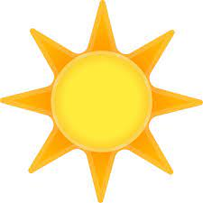
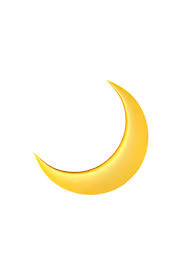
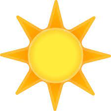
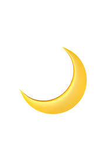

Sunrise & Sunset Extension
Bienvenue dans l'extension Sunrise & Sunset. Cette extension fournit des informations sur les phases du lever, du coucher du soleil et de la lune.



Cliquez ici pour en savoir plus.
Bienvenue dans l'extension Sunrise & Sunset. Cette extension fournit des informations sur les phases du lever, du coucher du soleil et de la lune.


Cliquez ici pour en savoir plus.